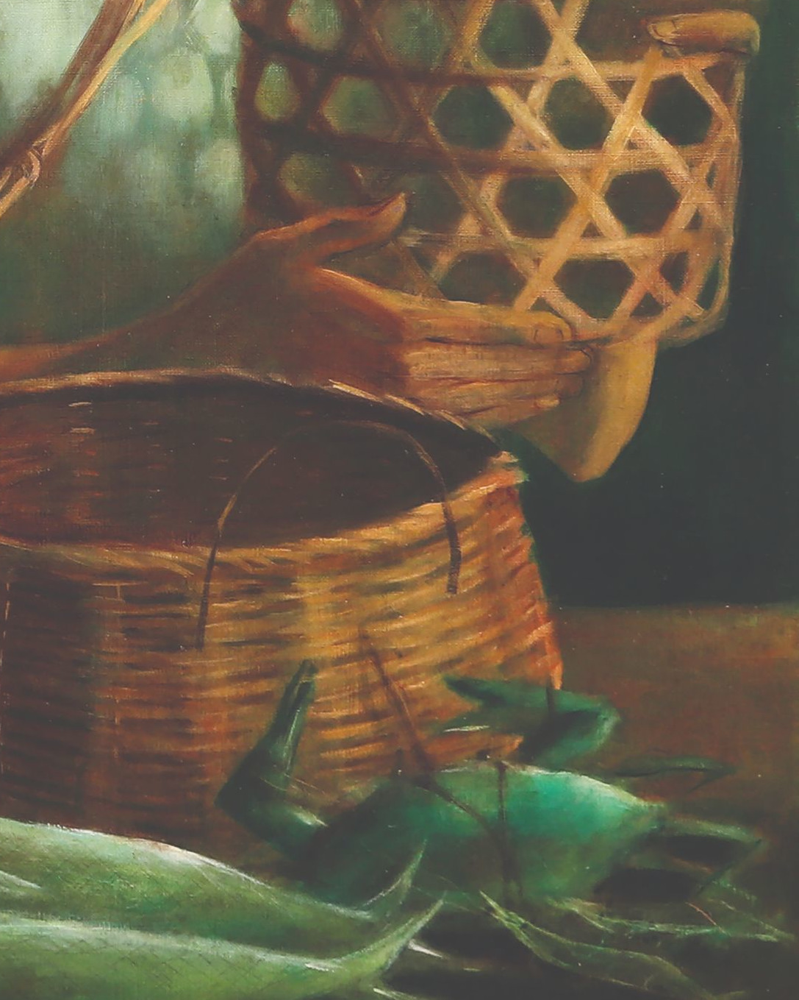

Magsaysay-Ho was a prominent Filipina artist known for her vibrant and expressive paintings depicting scenes from rural life and the everyday experiences of Filipinos. She was born in Manila in 1914 and studied art at the University of the Philippines before traveling to the United States and Europe to further her education. Magsaysay-Ho was one of the first female members of the influential Filipino artists collective known as the "Thirteen Moderns," and her work has been exhibited in galleries and museums around the world. Her legacy continues to inspire and influence generations of Filipino artists.
Anita Magsaysay-Ho was a Filipino artist known for depicting rural life and the struggles of working-class
women in the Philippines. "Women in a Basket" exemplifies this theme. The painting portrays women in traditional
attire seated in a basket suspended from a bamboo pole carried by two men. The muted colors and serene expressions
on the women's faces suggest the difficulties of their work but also the strength and resilience of their spirits.
The painting may have been inspired by Magsaysay-Ho's observations of daily life in the Philippines,
where women often work in physically demanding jobs. The image of women being "carried" in baskets is a
common one in Filipino culture, and Magsaysay-Ho likely drew on this symbolism. Overall, "Women in a Basket"
is a powerful artwork that celebrates the dignity and strength of working-class women in the face of hardship.